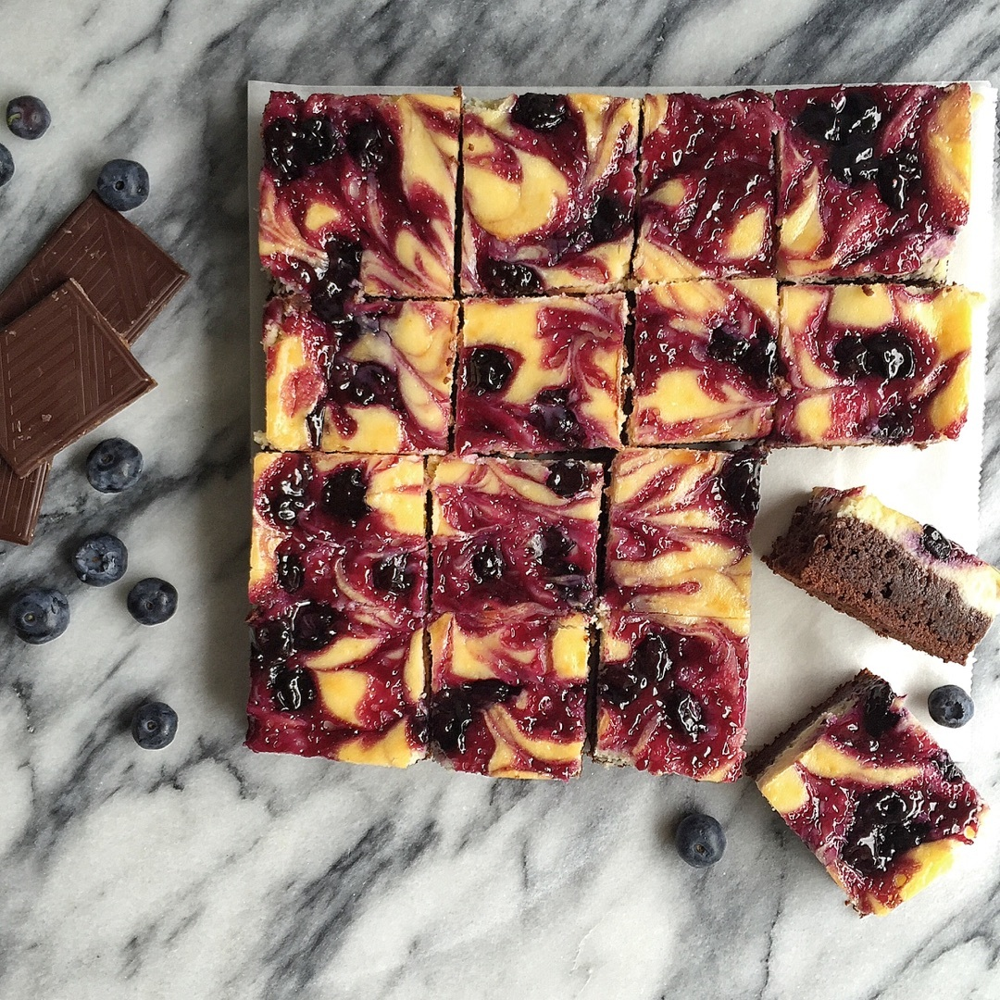

Blueberry Cheesecake
Prep Time: 20 min | Cook Time: 35 min | Wait Time: 2 hr
Ingredients: Makes 16
For the blueberry compote:
½ Cup Blueberries
⅓ Cup Sugar
¼ Cup Water
1 Teaspoon Corn starch
1 Teaspoon Vanilla extract
For the brownie:
57 Grams Butter
110 Grams Dark chocolate, chopped
½ Cup Sugar
2 Eggs
½ Teaspoon Vanilla extract
5 Tablespoons All-purpose flour
1 Pinch Salt
For the cheesecake:
300 Grams Cream cheese at room temperature
1 Egg
⅓ Cup Sugar
1 Teaspoon Vanilla extract
Instructions
Step 1:
Mix the water with the corn starch in a small bowl. Place the blueberries, sugar & vanilla in a pan. Add the corn starch water & let it cook for 3 min
Step 2:
On medium heat. Stir from time to time but don't squeeze the blueberries. Then transfer to a bowl & set aside to cool down.
Step 3:
To make the cheesecake, whisk the cream cheese until smooth. Then add the remaining ingredients. Whisk until smooth & set aside.
Step 4:
Preheat the oven to 350F & line a small square baking dish (22cm) with parchment paper.
Step 5:
Melt the chocolate & butter over a water bath. I used a 55% caramel sea salt & almond nougat chocolate bar but you can use just plain dark chocolate.
Step 6:
Whisk the eggs, sugar & vanilla. Once the chocolate has cooled down a bit. Whisk it in.
Step 7:
Finally add the flour, cocoa powder & salt. Mix until well combined.
Step 8:
Pour the brownie mixture over the prepared baking dish.
Step 9:
Then carefully spread the cream cheese mixture over the brownie mixture.
Step 10:
Then spoon the blueberry compote over the cream cheese mixture.
Step 11:
Using a toothpick, make swirls. Make sure you only touch the cream cheese part, not the brownie part. Bake for 30-35 min until it starts to get golden
Step 12:
Leave it at room temperature to cools down. Then place it in the fridge for 2 hours. Then slice it into squares & keep them in the fridge.
Step 13:
Enjoy!
- ½ Cup Blueberries
- ⅓ Cup Sugar
- ¼ Cup Water
- 1 Teaspoon Corn starch
- 1 Teaspoon Vanilla extract
- 57 Grams Butter
- 110 Grams Dark chocolate, chopped
- ½ Cup Sugar
- 2 Eggs
- ½ Teaspoon Vanilla extract
- 5 Tablespoons All-purpose flour
- 1 Pinch Salt
- 300 Grams Cream cheese at room temperature
- 1 Egg
- ⅓ Cup Sugar
- 1 Teaspoon Vanilla extract
- Mix the water with the corn starch in a small bowl. Place the blueberries, sugar & vanilla in a pan. Add the corn starch water & let it cook for 3 min
- On medium heat. Stir from time to time but don't squeeze the blueberries. Then transfer to a bowl & set aside to cool down.
- To make the cheesecake, whisk the cream cheese until smooth. Then add the remaining ingredients. Whisk until smooth & set aside.
- Preheat the oven to 350F & line a small square baking dish (22cm) with parchment paper.
- Melt the chocolate & butter over a water bath. I used a 55% caramel sea salt & almond nougat chocolate bar but you can use just plain dark chocolate.
- Whisk the eggs, sugar & vanilla. Once the chocolate has cooled down a bit. Whisk it in.
- Finally add the flour, cocoa powder & salt. Mix until well combined.
- Pour the brownie mixture over the prepared baking dish.
- Then carefully spread the cream cheese mixture over the brownie mixture.
- Then spoon the blueberry compote over the cream cheese mixture.
- Using a toothpick, make swirls. Make sure you only touch the cream cheese part, not the brownie part. Bake for 30-35 min until it starts to get golden
- Leave it at room temperature to cools down. Then place it in the fridge for 2 hours. Then slice it into squares & keep them in the fridge.
- Enjoy!